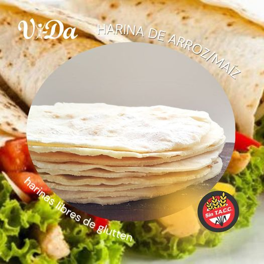
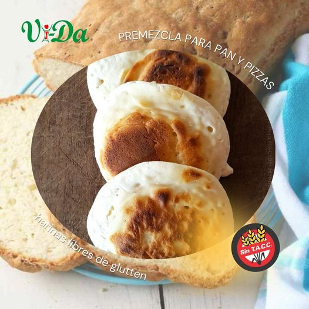

👌La harina de arvejas no sólo es aconsejable por ser libre de Gluten sino también porque es un buen aporte de proteínas, carbohidratos, vitamina A y del complejo B, rica en minerales y baja en grasas😱. . 👉Siempre recomendable para incorporar como reemplazo de harinas más refinadas, la harina de arvejas se suele utilizar para hacer sopas, panes, masas, hamburguesas, crema, dulce, panqueques, fainá, entre otros. . 🧐¿Vos, en qué preparaciones la usas? Queremos leer sugerencias y recomendaciones que puedan ayudar a toda esta comunidad que busca el consumo libre de gluten!😉😍
😉Van saliendo algunas opciones para preparar con nuestras Harinas Libres de Glutten!!! . 💪Muchas opciones posibles, pero de las más usadas 👉 la harina de arroz para unas ricas masas para tacos!! . 👌 2 tazas de agua 2 tazas de harina de arroz Molino Vida 1 cuch sopera de aceite Sal a gusto. . ¿Las probaron?😋
😋TRE MEN DOS💥!! . 😁Asi son los panes que podes lograr con nuestra Premezcla para Pizzas y Panes LIBRES DE GLUTEN!! . 🍞🥖Les dejamos una receta..👌asi de fácil y 👌así de rica!! . ✔️500gr de Premezcla Molino Vida ✔️300ml de Agua templada ✔️ 10gr de levadura en polvo ✔️2 cucharaditas de sal